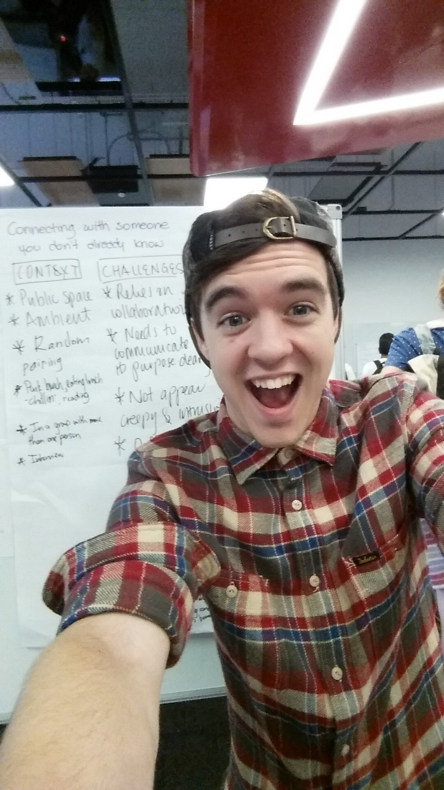

Meet the Team.
Get to know the team behind Unearth.
World Cafe
An iterative and collaborative design process to generate ideas and group them by theme.
Design Iteration
Donec sed odio dui. Cras justo odio, dapibus ac facilisis in, egestas eget quam.
Build
Donec sed odio dui. Cras justo odio, dapibus ac facilisis in, egestas eget quam.

Left to right: Jacob Greenaway, Tom Muldoon, En Bo.
Jacob Greenaway
Interaction Designer
Studying a Bachelor of Multimedia Design. This handsome devil was the team's Jack-of-all-trades. The most prominent contributions I made to the project were the entire physical build, iteration of concept, bursts of coding and generation of supplementary exhibition materials.
Tom Muldoon
Interaction Designer
Studying a Masters of Interaction Design. Tom is one of the code wizards behind Unearth. As well as contributing to code assets in C#, he was also responsible for producing the team's kickstarter video and audio assets.
En Bo
Interaction Designer
Studying a Bachelor of Multimedia Design. En, what a powerhouse. This guy was the other code wizard whose expertise in the manipulation of heatmaps and pathfinding made Unearth possible. Many of the problems that we encountered along the way were solved by En, and his contributions to concept were essential.
Ruxiue Song
Interaction Designer
While producing Unearth was the teams main goal, there were a bunch of other asessments along the way, each requiring us to produce specific materials. With her skills in graphic design, Crystal was able to ensure that we always had something top-notch to present.
World Cafe
Getting keen for some ideating.
The World Cafe process began with everyone creating and presenting initial 'inspiration' ideas. The aim of this was to look out into the world and dream up something that we would imagine being available in the future. Throuout this process we were encouraged to look into the realms of sci-fi and fiction, and to really push the boundaries of what we thought was possible with our concepts
'Presence' was the concept that I ended up presenting. It plays with the notion that people always look for an empty bench when they need to sit, avoiding contact with others where possible. Presence looked to connect people in a playful and unitrusive way, so that sitting at a bench by oneself would not prevent you from being able to interact with others.
My initial inspiration concept: 'Presence'
Some design sketches
The most important thing I took away from working on this concept was the idea of trying to connect people and bridge social gaps. It's something that I carried with me for the whole studio.
The inspiration concepts from the entire class were collected together and grouped under rough headings by our knowledgable teaching staff. Groups of concepts included associations such as "Connecting with people you don't know", "Productivity" and "AR for learning to code".
Over a few days I had the opportunity to explore the different themes and iterate on them with my peers. Under each theme we explored the areas of Context and Implementation, refining the ideas of previous visitors to the theme as well as adding our own to the mix.
Working on each of the themes in turn allowed me to get a good feel for the kind of project that I wanted to build for the rest of the semester. It was also great for acertaining the abilities, talents and preferences of my peers. Each person had a different perspective on each problem space, and it was a growing experience to take in others' opinions and views. I definitely felt that my own perspectives on design were broadened by the experience.
The World Cafe was completed with the forming of teams. Each of us was given the opportunity to place three preferences
Over a few days I had the opportunity to explore the different themes and iterate on them with my peers. Under each theme we explored the areas of Context and Implementation, refining the ideas of previous visitors to the theme as well as adding our own to the mix.
Working on each of the themes in turn allowed me to get a good feel for the kind of project that I wanted to build for the rest of the semester. It was also great for acertaining the abilities, talents and preferences of my peers. Each person had a different perspective on each problem space, and it was a growing experience to take in others' opinions and views. I definitely felt that my own perspectives on design were broadened by the experience.